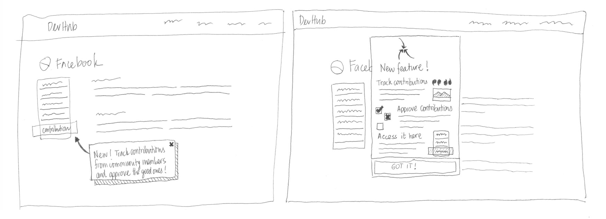
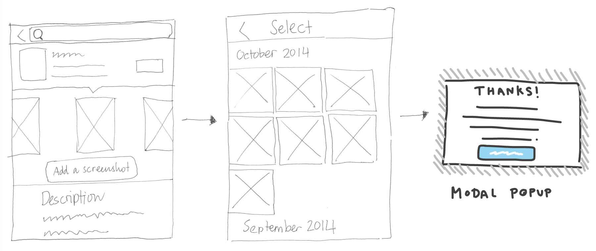
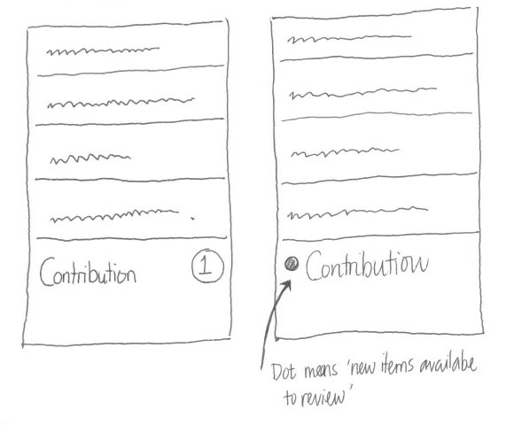
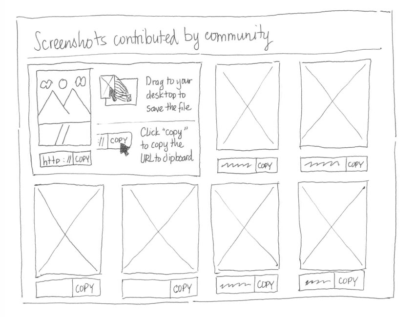

---
layout: MarketplaceUXSpec
multipage: false
---	

<div class="container">
	<h1>Concept &rarr; Supplement app listing page with screenshots</h1>

	<!-- Pagination. If you have more than one page, set the multipage variable in the Frontmatter to true. Editing the pagination code happens in /_includes/homePagination.html. -->
	{% if page.multipage %}
		{% include homePagination.html %}
	{% endif %}

	<div class="col-sm-12 col-md-12 col-lg-12">
  	
  	<h3>Launch program</h3>
  	
  	<h4>Developer-facing</h4>
	
	  <p class="longText">Two ways to notify developers that the contribution program is launched:</p>
    
    <ol class="longText">
      <li>Non-modal tooltip</li>
      <li>Modal dialog</li>
    </ol>
    
    
    
    <h4>Contributor-facing</h4>
    
    <ol class="longText">
	    <li>An “Add a screenshot” link appears below the screenshot section in the App Details page</li>
	    <li>When selected, a file upload dialogue appears, allowing contributors to pick a screenshot to upload</li>
      <li>When submitted, a success message is displayed</li>
	  </ol>
    
    
    
    <h3>Notify new contribution</h3>
    
    <p class="longText">Notification of new contributions that come in:</p>
    
    <ol class="longText">
      <li>Using numbers to indicate new contributions</li>
      <li>Using coloured dots to indicate new contributions</li>
      <li>Using modal window</li>
      <li>Using a header menu that’s accessible on-demand</li>
      <li>Using a proper Contributor section in the DevHub interface</li>
      <li>The Contributor section, divided by tabs to help differentiate Translations and Screenshots-based contributions</li>
    </ol>
    
    
    
    <h3>View contribution</h3>
    
    <p class="longText">Contributed screenshots are ordered by date submitted in descending order (latest screenshots appear first). In this interface, a developer can either:</p>
    
    <ol class="longText">
      <li>Drag-and-drop/right-click and Save As… image to desktop, or</li>
      <li>One click to copy image URL to clipboard</li>
    </ol>
    
    
    
    <p class="longText">To add a screenshot into the app, the developer opens the Marketplace Config file and reference the image there. The updated Marketplace Config file, with the new screenshot included, is then resubmitted to Marketplace.</p>

	</div>